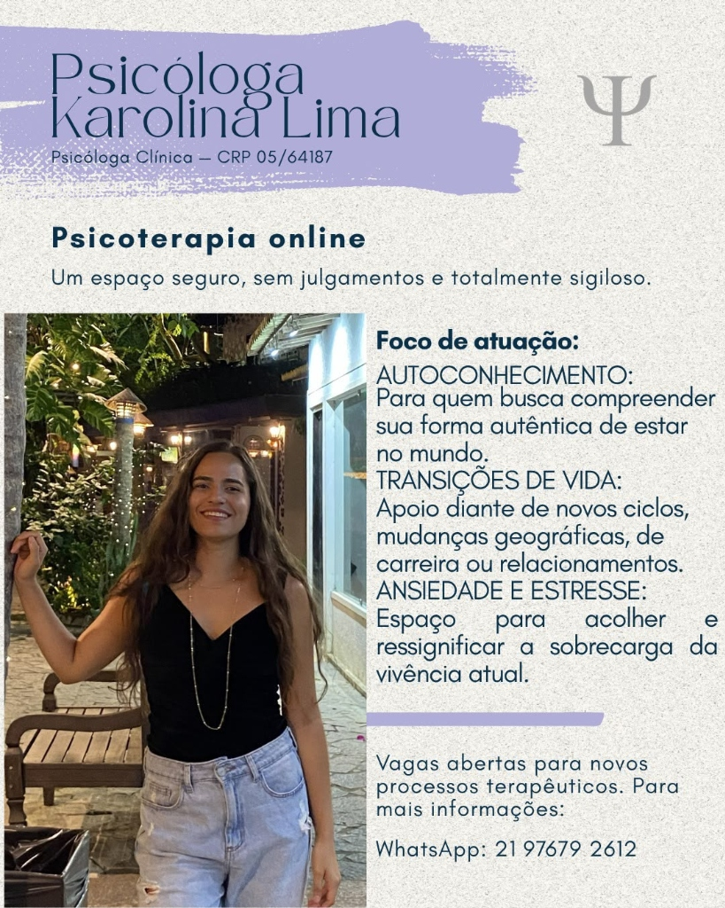

Um espaço seguro, acolhedor e sem julgamentos para você se reencontrar
Atendimento humanizado e totalmente sigiloso para te apoiar em processos de autoconhecimento, ansiedade e momentos de transição de vida — com a flexibilidade e o conforto que a sua rotina precisa.

Abordagem Humanista
Fenomenológica-Existencial
Você tem sentido o peso da rotina nos últimos tempos?
Muitas vezes normalizamos o cansaço mental e a angústia, mas você não precisa passar por esses momentos sem apoio.
Ansiedade e Mente Acelerada
Sensação de urgência permanente, pensamentos que não desaceleram e dificuldade de se desconectar das cobranças diárias.
Insegurança em Transições de Vida
Medo do desconhecido diante de mudanças de carreira, mudanças de cidade, início ou término de relacionamentos e novos ciclos.
Viver no "Piloto Automático"
Sentir que os dias passam sem propósito claro, vivendo para atender apenas às expectativas dos outros e perdendo sua própria essência.
Falta de um Espaço Seguro para Falar
Guardar dores e vulnerabilidades para si por medo de julgamentos, incompreensão ou por não querer sobrecarregar amigos e familiares.
"A psicoterapia não é sobre consertar quem você é, mas sobre compreender sua dor e construir caminhos mais autênticos e saudáveis para a sua vida."
Como posso te apoiar no seu processo
Pilares centrais desenvolvidos com base na abordagem Humanista Fenomenológica-Existencial.
Autoconhecimento
Para quem busca compreender sua forma autêntica de estar no mundo. Um mergulho na sua história, valores e desejos reais, libertando-se de padrões que já não fazem mais sentido.
- ✦ Autoestima e autoaceitação
- ✦ Reconhecimento de limites
- ✦ Autonomia emocional
Transições de Vida
Apoio e acolhimento diante de novos ciclos. Mudanças geográficas (adaptação a novas cidades ou países), transições de carreira, novos projetos de vida ou términos de relacionamentos.
- ✦ Clareza para tomada de decisões
- ✦ Adaptação a novos cenários
- ✦ Elaboração de perdas e lutos
Ansiedade e Estresse
Espaço para acolher, entender as causas profundas e ressignificar a sobrecarga da vivência atual. Desenvolva recursos internos para lidar com a pressão diária com mais serenidade.
- ✦ Manejo de sintomas ansiosos
- ✦ Prevenção do esgotamento (Burnout)
- ✦ Reorganização da rotina emocional
Como iniciar o seu acompanhamento
Um processo simples, transparente e sem burocracias.
Mensagem no WhatsApp
Você clica em qualquer botão desta página e me envia uma mensagem direta no WhatsApp para tirar dúvidas e conhecer valores.
Alinhamento de Horário
Combinamos juntos o dia da semana e o horário fixo que melhor se adapta à sua rotina e aos seus compromissos.
Sessões Online
Nos encontramos semanalmente por videochamada (50 minutos) em um espaço 100% seguro, confidencial e acolhedor.
Cuidado terapêutico que se adapta à sua vida
A terapia online oferece o mesmo rigor técnico e eficácia do consultório presencial, com a praticidade que o mundo contemporâneo exige.
Conforto e Privacidade
Realize a sua sessão no ambiente mais seguro e acolhedor para você: sua própria casa.
Zero Deslocamento
Economize tempo precioso de trânsito, estacionamento e esperas em salas de atendimento.
Sem Barreiras Geográficas
Atendimento para pessoas de todo o Brasil e brasileiros que vivem no exterior.
Total Sigilo e Segurança
Sessões realizadas por canais seguros com criptografia e respeito ao Código de Ética do CFP.
Karolina Lima
Psicóloga Clínica • CRP 05/64187
Olá! Sou Karolina Lima
Sou psicóloga com orientação na abordagem Humanista Fenomenológica-Existencial. Minha atuação clínica é fundamentada no respeito à singularidade de cada pessoa, acreditando que você é o verdadeiro protagonista da sua jornada.
Ofereço um espaço protegido de escuta, acolhimento e ausência de julgamentos para te apoiar a compreender suas angústias, ressignificar momentos de sobrecarga e encontrar sua forma autêntica de estar no mundo.
Perguntas mais comuns sobre o atendimento
Como funciona a psicoterapia online? É tão eficaz quanto a presencial?
Sim! A psicoterapia online é regulamentada pelo Conselho Federal de Psicologia (CFP) e diversos estudos científicos comprovam que sua eficácia é equivalente ao atendimento presencial. As sessões acontecem por videochamada com o mesmo sigilo, acolhimento e compromisso ético.
Qual é a duração e a frequência das sessões?
As sessões têm duração de 50 minutos e ocorrem preferencialmente com frequência semanal, garantindo a continuidade e a profundidade necessárias para o processo terapêutico.
Como é a abordagem Humanista Fenomenológica-Existencial?
É uma abordagem centrada na pessoa e na sua experiência vivida. Em vez de reduzir você a rótulos ou diagnósticos frios, buscamos compreender como você vivencia o mundo, suas escolhas, seus sentimentos e como você pode construir um sentido autêntico para a sua vida.
Como são feitos os pagamentos e agendamentos?
Os pagamentos podem ser realizados via Pix ou transferência bancária (por sessão avulsa ou pacote mensal). De acordo com as diretrizes do CFP, informações de valores e condições são passadas diretamente na conversa privada do WhatsApp.
O que preciso para fazer a sessão online?
Apenas um celular ou computador com câmera, microfone, conexão estável de internet e um espaço privativo onde você se sinta confortável e seguro para falar livremente.
Dê o primeiro passo em direção ao seu cuidado emocional
Vagas abertas para novos processos terapêuticos. Clique no botão abaixo para tirar suas dúvidas e dar início ao seu atendimento.
📲 WhatsApp: (21) 97679-2612 • Resposta direta da psicóloga